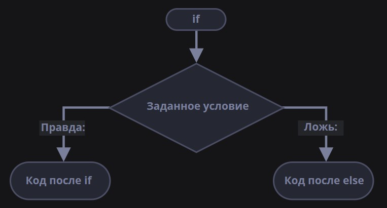

Условные операторы
Условные операторы позволяют программе принимать решения. Они выполняют определённый блок кода только если условие истинно (True). Это как развилка на дороге: "Если дорога свободна, едем прямо, иначе поворачиваем".
Базовый синтаксис if
Самая простая форма условного оператора:
Простой пример
age = 18
if age >= 18:
print("Вы совершеннолетний")
print("Можно голосовать")
Важно: В Python отступы (обычно 4 пробела или табуляция) имеют значение! Код внутри блока if должен быть с отступом. Без правильных отступов программа не будет работать.
if-else (если-иначе)
Добавляем альтернативный вариант:
if условие:
действие_1
else:
действие_2
Пример
password = "qwerty123"
entered_password = "qwerty123"
if password == entered_password:
print("Доступ разрешён")
else:
print("Неверный пароль")

if-elif-else (если-иначе если-иначе)
Для нескольких условий:
if условие_1:
действие_1
elif условие_2:
действие_2
elif условие_3:
действие_3
else:
действие_4
Пример: Оценка студента
score = 85
if score >= 90:
grade = "A"
print("Отлично!")
elif score >= 80:
grade = "B"
print("Хорошо